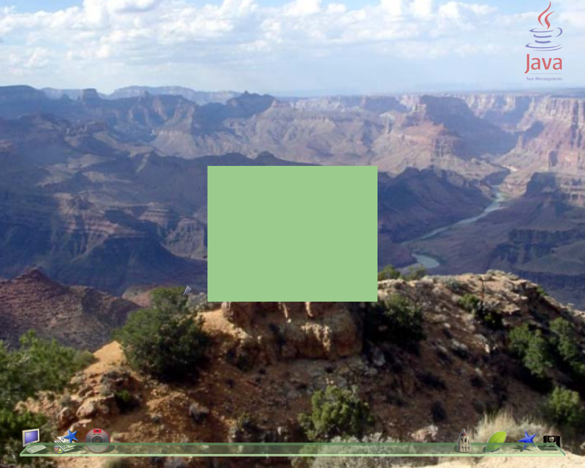

This tutorial is based upon the tutorial written by Hideya Kawahara.
| Aim: | To demonstrate the basic steps of creating a 3D application within the lg3d framework |
|---|---|
| Requirements: | To use this tutorial you will need a functional installation of the of lg3d (the stable version is the best version to begin with). This can be found at the lg3d-core web site. Follow the "Getting started with Project Looking Glass" link for installation instructions. You do not need to run the lg3d-session version. |
| Additionally, you need to have the Java 1.5 SDK. This is available at the Sun Java web site. | |
| Steps: | |
| Step 1: | Create a root container |
| First, we need to create the root container for this 3D application. The Frame3D class serves for this purpose. We can extend Frame3D, or simply create one and add components to it. In this example, we'll take the later approach. | |
Frame3D frame3d = new Frame3D(); |
|
| Step 2: | Create a box to put in the container |
| Now, let's try to put a box of 5cm x 4cm x 3cm at the center of this application. Predefined shapes found under org.jdekstop.lg3d.utils.shape are handy for this purpose. By the way, what color would you like to paint it? Let's try pale green for this example. Therefore we need to create an appearance object to handle the color of the box. The API also provides a handy class to specify color, which is SimpleAppearance. Additionally you can specify the object's color in a more detailed manner, including shininess and what color it shines, translucency and textures applied to it. You can find out more by looking at the API documentation for Appearance, Material and Texture. |
|
SimpleAppearance app = new SimpleAppearance(0.6f, 0.8f, 0.6f); |
|
| Now that we have a default appearance, we can create the box of 5cm x 4cm x 3cm. | |
Box box = new Box(0.05f, 0.04f, 0.03f, Primitive.GENERATE_NORMALS | Primitive.GEOMETRY_NOT_SHARED, app); |
|
| Project Looking Glass 3D APIs are based on Java 3D. In Java 3D, by default, the metric system is used, where one (1) unit equals one meter. And if configured correctly, by drawing an object of size 0.02 units turns into an object approximately 2cm in size on the screen. Please note that the default configuration for lg3d is for a perspective view, therefore the drawing size varies depending upon how far away, or how close the object is. By default, the 3D scene manager of lg3d will position the object at a reasonable position where the size is close to the size intended. By default all primitives with the same parameters share their geometry (e.g., you can have 50 shperes in your scene, but the geometry is stored only once). A change to one primitive will effect all shared nodes. Another implication of this implementation is that the capabilities of the geometry are shared, and once one of the shared nodes is live, the capabilities cannot be set. Therefore, to allow multiple copies of the application to run we need to use the Primitive.GEOMETRY_NOT_SHARED flag. As this constructor overrides the default values we also need to include the Primitive.GENERATE_NORMALS so that the color is properly displayed. | |
| Step 3: | Put the box in the container |
| To display the box on the screen, we must add the box to the top level container. The box cannot be added directly to the Frame3D, only a Component3D can be added to Frame3Ds (this functionality is inherited from Container3D). Component3D is the base component for all the lg3d components. One component can have multiple Shape3D objects to define its shape (note that Box inherits Shape3D), and a Frame3D can host multiple Component3Ds (including nested Container3Ds). Therefore we must create a Component3D. |
|
Component3D comp = new Component3D(); |
|
| Then add the box to the Component3D. | |
comp.addChild(box); |
|
| Now the Component3D can be added to the root container. | |
frame3d.addChild(comp); |
|
| Step 4: | Initialize the container |
| Now that the box has been added to the frame, the container needs to be initialized to allow interaction, and to make the box visible. Firstly, a call needs to be made to initialize the capabilites of the Frame3D. This function ensures that all objects in the frame are pickable. If you find that your cursor does not go over the top of your object then be sure you have called this function (after adding the Component3Ds to the frame). |
|
frame3d.setCapabilities(); |
|
| To assist the SceneManager (at least in the default scene manager - GlassySceneManager) it is useful to set the size hint for the Frame3D. This is used by the SceneManager to arrange 3D applications in the 3D space it manages. | |
frame3d.setSize(0.05f, 0.04f, 0.03f); |
|
| To make the frame visible two steps are required. First, the frame needs to be added to the scenegraph. The setActive() call does this. More precisely, the call initiates interaction with the 3D SceneManager and the manager handles the details of the policy for presenting the application (e.g. location, size, etc.). |
|
frame3d.setActive(true); |
|
| Second, although the frame is active, it must also be made visible. Note setVisible() is fairly light-weight compared to the setActive() call, therefore setVisible() should be used to temporarily hide an object. | |
frame3d.setVisible(true); |
|
| Step 5: | Compile the code |
| We have finished writing the code. The full version includes the required import statements, and various constructor and main methods. Download Tutorial1.java Now we need to compile the source file. The tutorial requires the lg3d core library and Java 1.5 to compile. The core library can be found under the lib directory of the lg3d distribution (replace $LG3DHOME with the path to the lg3d distribution). |
|
|
|
| Step 6: | Setup the test environment |
| To run the application the lg3d environment must be set up correctly to ensure that the display and other configuration parameters are set. To ease this process a shell script is available. Once configured correctly you can run the tutorial easily. Download runtutorial and follow these steps: | |
|
|
| Step 7: | Run our application |
| To run the tutorial, simply execute the runtutorial script with the name of the class file (without the .class extension) | |
./runtutorial Tutorial1 |
|
| The lg3d desktop should be displayed with a pale green screen box in the center (as you see below). In actual fact, only a pale green square can be seen - in the next tutorial the box will be rotated to make it look like a box. | |
|  | |